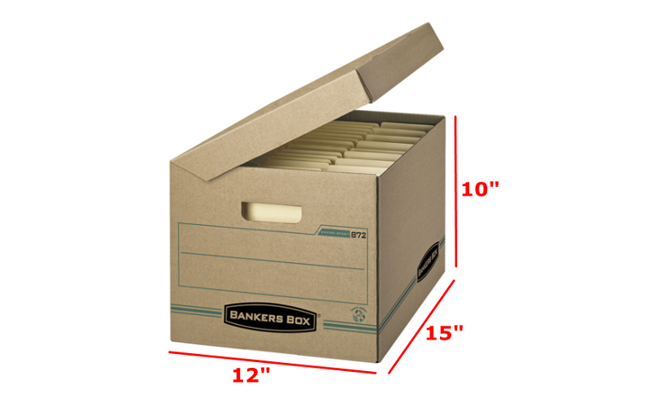

Commonly Asked Questions on the California Seismic Principles Exam
According to the Board for Professional Engineers, Land Surveyors, and Geologists (BPELSG)*, the application fee is $150. In addition to the application fee, a $65 testing fee must be paid to the Prometric Testing Center. The total cost is $215. Additional information can be found at: *https://www.bpelsg.ca.gov/applicants/application_fees.shtml
After you pass the 8-hour national PE exam, and satisfy the experience requirements, you can then submit an application package to the Board. All the information, including the application, can be found at https://www.bpelsg.ca.gov/pubs/forms/ceapp.pd.
Note: You can take the 8-hour national exam and the state-specific exams concurrently. But it is recommended to take and pass the national exam before you apply for the state-specific exams**. More information can be found at **https://www.bpelsg.ca.gov/applicants/national_id_faq.pdf.
Once your application for licensure as a Professional Civil Engineer is approved by the Board, you can sign up to take the Seismic Principles Exam. Per Prometric Testing*, you will be authorized to sit for the exams in the quarter following the one in which your application is approved by the Board. More information can be found at *https://www.prometric.com/sites/default/files/2020-06/CA%20Civil%20Seismic%20Principles%20CIB%206.23.20.pdf
The Seismic Principles Exam is offered on a continuous basis. Generally, once you are approved by the Board to take the exam, you have to take it within a single quarter following the quarter in which you were approved by the Board. You can only take the Seismic Principles Exam once per quarter, which means that if you fail, you have to go through the application process AGAIN and send $150 to the Board. The original (and any subsequent) approval only lasts for a single quarter... so you won't be able to take the exam two quarters in a row. At best, you could take the exam twice in one year. The quarter deadlines are as listed below:
- Quarter 1: January 1 - March 31
- Quarter 2: April 1 - June 30
- Quarter 3: July 1 - Sep. 30
- Quarter 4: Oct. 1 - Dec. 31
According to the statistics of past exams shown by the Board, the passing rate for the exam was 44% for Fall 2017. From 2013 to 2017, the overall passing percentages were slightly above 40%. https://www.bpelsg.ca.gov/applicants/exam_statistics.shtml
On our website, we offer different practice exams that include questions similar to the ones asked on the exam. In addition, you can go through our detailed lectures for the learning materials needed to pass the exam. A big chunk of the exam will test your knowledge on ASCE 7-16. This means that it is in your best interest to have a copy of the book and review it. Another tool that can contribute towards your understanding of the subject is the lecture videos posted on our website, which provide additional explanations for the study content.
Yes, the Seismic Principles Exam is only required in the state of California to practice as a licensed Professional Civil Engineer.
The Seismic Principle Exam begins with a tutorial. After that, you will have 2.5 hours to complete the exam. There will be no breaks throughout the test, so make sure to have a good night's rest beforehand. While the exam itself is only 2.5 hours, the entire process will be longer. You'll want to arrive at the testing center at least a half-hour early. Upon arrival, you must check-in (a few minutes). You will be provided a locker for your keys/phone/snacks. Only hold onto the materials you're allowed to have for the exam. You can use the bathroom during this time if needed. Usually around your scheduled exam time (or a little earlier depending on available seating) a testing center employee will call your name and lead you to the testing room. They'll spend a few minutes getting you prepared and briefly check for any unpermitted items. Afterward, they will lead you into the closed exam room, sit you down at your computer, and you'll be ready to go.
The exam has 55 multiple-choice questions (A, B, C, D) of equal weight. There will not be any written response questions.
You are allowed to bring calculators to the exam (up to two at once). The second calculator could be used as backup in case your main one dies. In accordance to the NCEES calculator policy, the following models are allowed:
- fx-115 and fx-991 models
- HP 33s and HP 35s models
- TI-30X and TI-36X models
The exam is an open book and open notes. Despite that policy, according to Prometric Testing’s testing requirements*, you’re limited to whatever can fit in one box no larger than 10"H x 15"W x 24" D which is comparable to a standard banker’s box. Also, your notes must be restrained by either a three-ring binder, physical binding, or a spiral tab system. Loose pages that could easily be removed are not allowed. Remember not to write on any of your notes/books during the exam because this can be perceived as writing down exam questions. More information can be found at *https://www.prometric.com/sites/default/files/2020-06/CA%20Civil%20Seismic%20Principles%20CIB%206.23.20.pdf
 Image via ShopperOnce the exam scoring is finalized, you will be emailed and/or mailed your results from the Board within 6-10 weeks. Everyone who took the exam in the same quarter will be notified of results at the same time via email. This means that if you take the exam towards the end of the quarter, you won't have to wait as long to get your results. Taking the exam at the beginning of a quarter means you will have to wait longer to get your results. Typically the exam results are released around the 2nd week AFTER the quarter ends for which the exam was taken during. Make sure your email and address does not change during that time. If something changes, you must submit a form directly to the Board to update your address: https://www.dca.ca.gov/webapps/bpelsg/address_change.php
Yes, you can retake the exam. If you are retaking the exam, you have to complete an application refile, which costs $150 per exam. This fee is only for the re-examination application to the Board. You'll then have to wait for email approval from the Board (similar to the first time). Typically, you will be re-approved faster than someone who is submitting a brand new PE license application package because your qualifying experience has already been verified the first time that you applied. This means that you don't need to send that information twice. The Board will send your approval email for the following quarter, with a code that you can use to sign up for the exam. Sign up for an exam date at a Prometric testing center, and pay the $65 fee. This cycle can repeat indefinitely until the exam has been passed.
Yes, you can, but it will be only useful in the state of California.
Determine your level of understanding of the test materials, and create a study schedule. This allows you to study beforehand by reviewing the material, practicing exam questions, and familiarizing yourself with common questions. Do not cram information. Make sure to eat nutritious foods and hydrate yourself before the exam. Pack all your necessities the night before (ID, calculators, a banker’s box, etc). Lastly, remember to get a good night’s sleep and arrive early to the test center.
No, this is not the case. The Seismic Exam will only test on the versions currently adopted by the various local building jurisdictions. This is not the same as the most recent versions. ASCE 7-16 has existed for many years before it was implemented into the Seismic Exam. To find out what versions of the CBC and ASCE 7 will be tested for your Seismic Exam, please refer to https://www.bpelsg.ca.gov/applicants/cerefs.shtml for the most updated information.
According to the Board of Professional Engineers*, the California Seismic Exam will contain the following topics and the respective coverage:
| Topic | Percentage |
|---|---|
| Seismic Data and Seismic Design Criteria | 10% |
| Seismic Characteristics of Engineered System | 15% |
| Seismic Forces: Building Structures | 28% |
| Seismic Forces: Non-Building Structures, Components, and Equipment | 12% |
| Seismic Analysis Procedures | 25% |
| Seismic Detailing and Construction Quality Control | 10% |
- First, pass the NCEES Fundamentals of Engineering Exam (FE).
- Apply and receive the Engineer in Training Certification.
- Have never been convicted of a crime related to engineering practice.
As a PE you will receive a renewal notice at your address two months before it expires. You can also view the expiration date at License Lookup, and verify your address. The PE renewal process has a fee of $115 with a delinquency fee of $57.50 per every 60 days of delay. If for any reason you do not receive this notice, the renewal payment can be sent directly to the Board office with a cover letter of your information as PE.
PE licenses are tied to the state that they are granted in. So if you have a PE license in, say, Colorado, your license will not be accepted by a building authority in California. Similarly, having a California PE license does not mean you can use it to stamp drawings in Colorado.
This doesn't mean that you can't practice engineering in all different states, it just means someone else with a license in that state will have to sign off on your work.
If you want to obtain a PE license in a different state (and you already have one), you will have to go through the Comity process. This typically entails having your experience verified by the state of interest (the one you WANT your new license in) via NCEES, paying any fees, and submitting a formal application.
You won't need to retake the 8 hour national exam, but if that state (like California) has any additional exams that are required to obtain that state's license, you'll need to take them.
Note that there is a monetary cost associated with maintaining multiple PE licenses, as well as dealing with continuing education requirements per each state's requirements.
As a PE, you can prepare, sign, seal, and submit engineering plans and drawings for approval.
You can get an engineering job without a license, but most of these jobs will be considered entry/mid level. In that position, the pay and responsibilities will be intended for engineers with less than 5 years of experience. Your career path may be limited by foregoing a license.
Obtaining a license shows that you have taken the next step in your professional career, and it is a requirement in many design firms for roles with greater responsibility. . There are also benefits to obtaining a license even if it isn’t required for your specific job. For example, you can prepare, sign, seal, and submit engineering plans and drawings for approval as a licensed Professional Engineer (PE). You will also have more perceived authority with “PE” next to your name. A PE license also allows you to become an independent consultant if you have any interest in becoming your own boss!